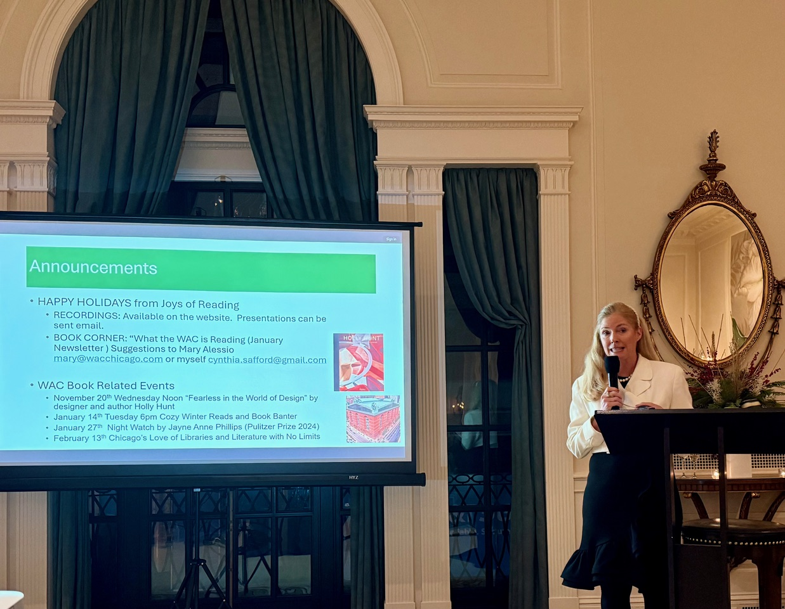

After only six years at The Woman’s Athletic Club of Chicago, Cynthia Safford-Mulcahy has become a literary legend. Lively, welcoming, and intellectually thoughtful, she has shaped Joys of Reading (JOR) into one of the club’s most vibrant cultural touchstones—an ongoing conversation where books become not just entertainment, but a continuing guide in attention, empathy, and meaning.
Cynthia’s gift is the way she leads readers into a book. Her discussions invite members inside the interior lives of characters—into motives and fears, loyalties and self-deceptions—and readers leave the discussion thinking differently about other people and about themselves. Reading, she suggests, is moral and imaginative training.
“Great novels drive deep assessment, challenge thinking, and provide a great continuing education.”
Reading That Lasts
There’s a truth every reader recognizes: we remember the mood of a novel, the voice, the emotional weather—yet the details can blur. “Tell me again, how does Dickens’s Mr. Micawber end up?” But after discussion what lasts is the shape of a character’s struggle, the pressure of a moral dilemma, the moment when a sentence reveals more than anticipated.
Cynthia takes her audience to that deeper place. Talking about books, she believes, sharpens memory and makes reading richer by helping readers notice what an author is trying to achieve. In Pride and Prejudice, for instance, Mr. Darcy’s first proposal is painful in its self-importance; his second proposal is luminous because he has changed. That growth—earned, imperfect, human—is what the reader carries forward.
Under Cynthia’s leadership, JOR members learn how to read with a new attentiveness: the pleasure of a well-made sentence, the power of a small detail—the way a novel examines the messy nature of truth and experience. This reading goes beyond “What happened?” to the larger questions that make fiction endure: Why did it happen? What does it reveal? What have we learned?

A Room That Becomes a Community
Cynthia’s understanding is matched by her warmth. She has the ability to connect people across generations and backgrounds—lawyers, philanthropists, former teachers, business leaders, librarians, artists—drawing everyone into the same intellectual circle. Even before a discussion begins, she is building community: “Have you met?” “Here’s someone you should know.”
Members have a name for her talent: “The Quiet Connector.”
That spirit of welcome changes the atmosphere in the room. Conversations become engaging and accessible, intelligent, and alive. People listen longer, they speak more thoughtfully, and they leave feeling part of something shared.
As one JOR committee member observes, Cynthia has a habit of pausing—listening carefully, often longer than expected—before offering an insight that reframes the entire discussion.
Another says, “You feel as if she’s paying attention to what matters. And then the conversation deepens.”
That’s signature Cynthia.
The Athlete Behind the Literary Leader
To understand Cynthia, it helps to know her background.
A native of Toledo, Ohio, Cynthia was a Division I competitive swimmer at the University of Notre Dame, earning varsity letters in the 1990s as a sprinter, and known for speed and discipline. Her years in collegiate athletics emphasized focus: the ability to work persistently and well.
Long before she guided conversations around books, she learned how to swim at an elite level. Competitive swimming, she once remarked, teaches an unusual blend of solitude and trust. “While you race alone in your own lane, you can’t win the meet unless the whole team is working together to give their best. We trained hard individually, responded to the coaching, and trusted the process.”
It is not hard to see how that training carries into her leadership. Cynthia has an athlete’s steadiness and a teammate’s instinct that shepherds a group and keeps everyone in the conversation.
Strategy, Leadership, and a Life of Ideas
Cynthia’s professional path is as impressive as her volunteer work. She is a Chicago-based marketing consultant who advises organizations and individuals on strategy, leadership, and thoughtful decision-making. She graduated from Notre Dame with a B.A. in International Studies and French and earned her MBA in finance and marketing from Northwestern University’s Kellogg School of Management.
She worked for more than 15 years at Unilever, contributing to major brands including Dove and Ragu Pasta Sauce—work that demanded clarity, organization, and the ability to see how people respond to language, identity, and story.
Her commitment to community leadership is equally strong. She serves on the board of the Positive Coaching Alliance and previously served on the board of Alphonsus Academy and Center for the Arts.
Across these worlds—sports, business, education, and literature—the pattern is consistent: Cynthia combines high standards with an instinct for collaboration. She knows the value of discipline, preparation, and excellence. And she understands how people grow: through thoughtful practice.
The Books That Stop You Mid-Page
Cynthia often says that plot is what hooks a reader: the desire to know what happens next. But plot alone is not enough. The books that survive time, that readers return to—do something more. They enlarge our world.
A novel, at its best, holds history, psychology, philosophy, and moral conflict within the shape of a story. It asks questions about loyalty and betrayal, love and cynicism, family and responsibility. It shows the strange inconsistencies of human nature—the way people mean one thing and do another, the way self-knowledge arrives late, the way courage can appear in ordinary moments.
Cynthia appreciates a “page-turner,” but she is especially drawn to what she calls a page-stopper—a book that makes you pause and reread because the writing itself is so alive, so exact, so true.
“Books are movable magic.”
A Chicago Story of Leadership and Friendship
Cynthia Safford-Mulcahy’s influence is unmistakable in the lives she touches. Her graceful leadership has made the Woman’s Athletic Club’s Joys of Reading Book Group not only an ongoing literary experience, but also a forum for sustained connection—friendship built through ideas and community strengthened through conversation.
At Notre Dame she learned resolution. In business she learned strategy. At the Woman’s Athletic Club she has created a space where busy, capable, accomplished women gather to think, to listen, and to speak about what books reveal to them.
Friends describe her as “curious, upbeat, and wonderfully organized.” Yet what makes her truly memorable is her presence: calm, focused, welcoming, and fully engaged. Cynthia does not merely host a discussion—she invites you in, guiding you from plot to theme to the deeper moral questions that make reading worth returning to.
Cynthia Safford-Mulcahy demonstrates that thoughtful conversation about books matters.
She makes it happen.